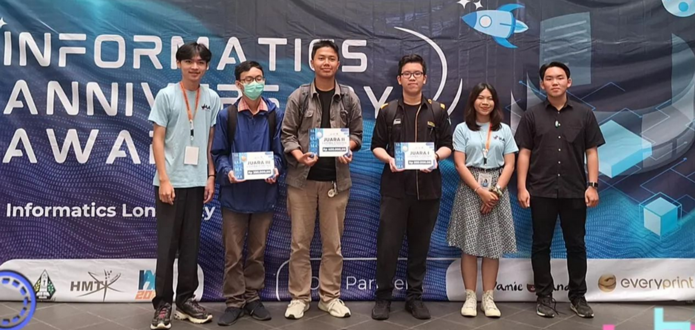
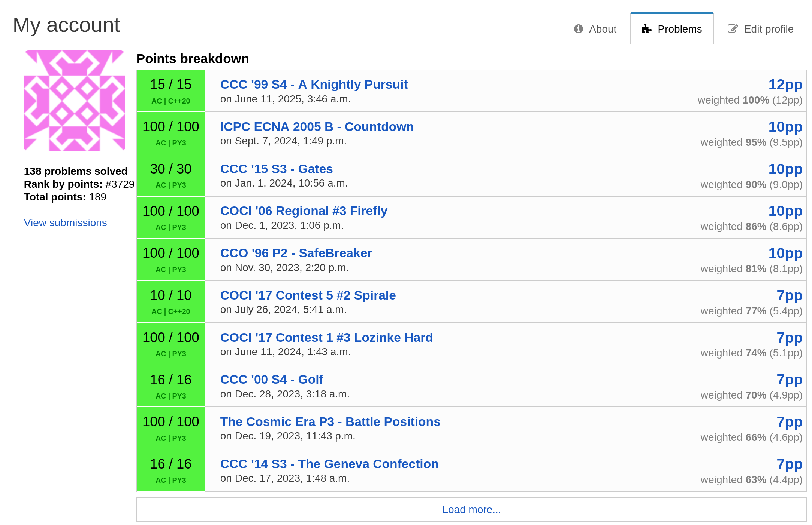
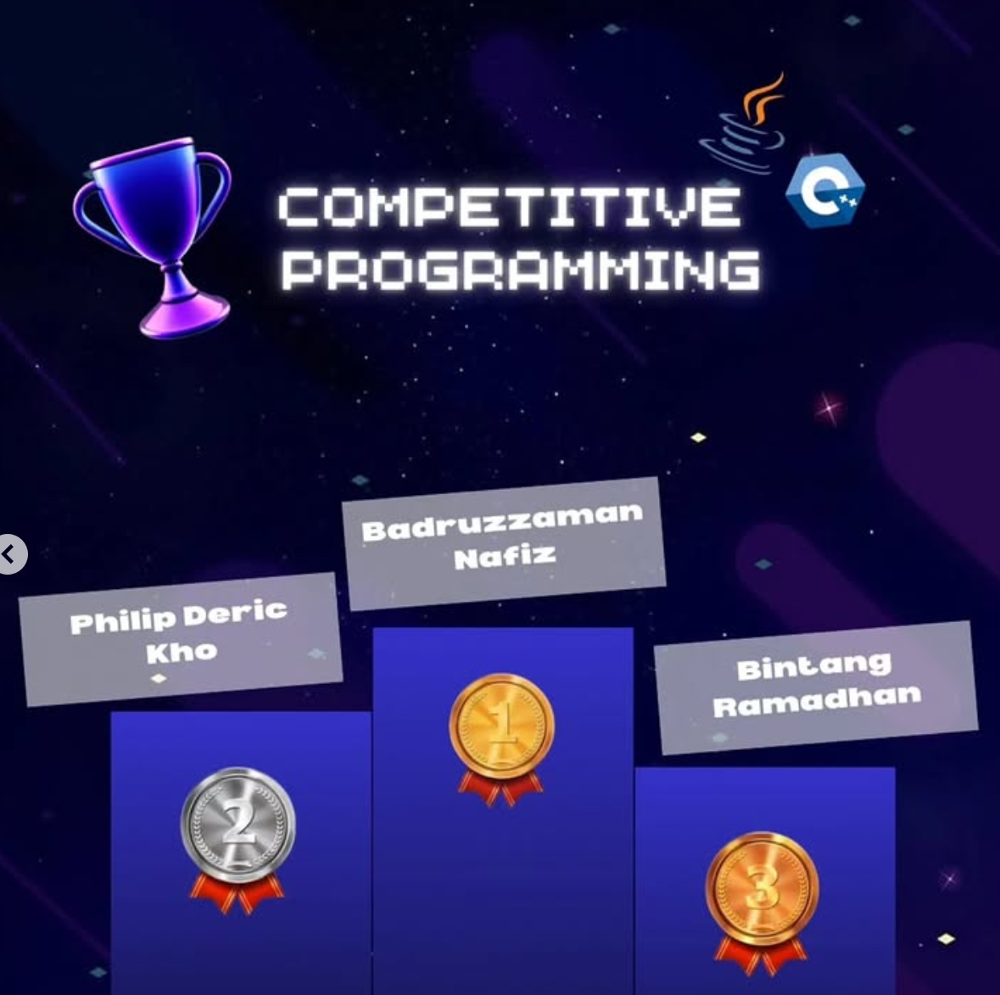
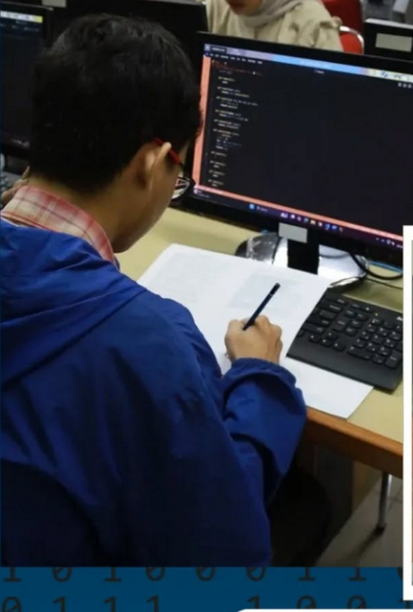
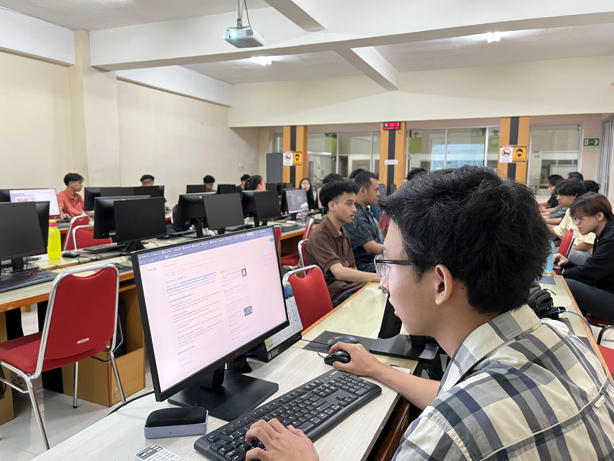
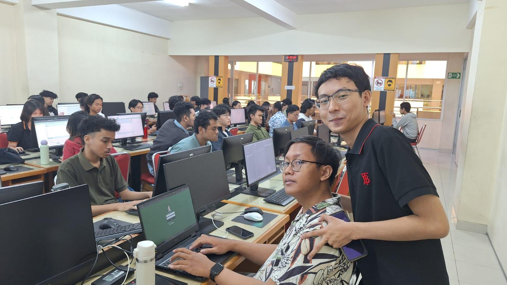

Competitive Programming
For the past two years, competitive programming has been my primary activity for learning computer science. Through hundreds of algorithmic problems and programming contests, I developed a deep interest in logical problem solving and mathematics.
What began as curiosity eventually led to national-level competitions, teaching opportunities, and software projects that apply the same algorithmic thinking to real-world problems.




Asisstant Lecturer
Served as a Teaching Assistant across multiple courses. From theoretical to practical implementation.


.png)
Python programming, algorithm design, problem solving, and laboratory assistance.
Propositional logic, predicate logic, contradiction, proofs, and formal reasoning.
Computer systems fundamentals and laboratory assistance.
VINIX7 Academy — Data Science & AI
Completed an intensive apprenticeship MBKM focused on the end-to-end data science workflow, including data preprocessing, statistical analysis, data visualization, and predictive model development using Python.
Things I have built (or with my team)
Campus Navigation Application
A mobile-oriented navigation system that helps students find efficient routes between buildings on campus using pathfinding algorithms.
JavaFX Task Manager
A desktop application designed to simplify task management with CRUD functionality and intuitive workflows.
“Every project begins as a puzzle. My goal is not only to solve it, but to create something useful for other people.”